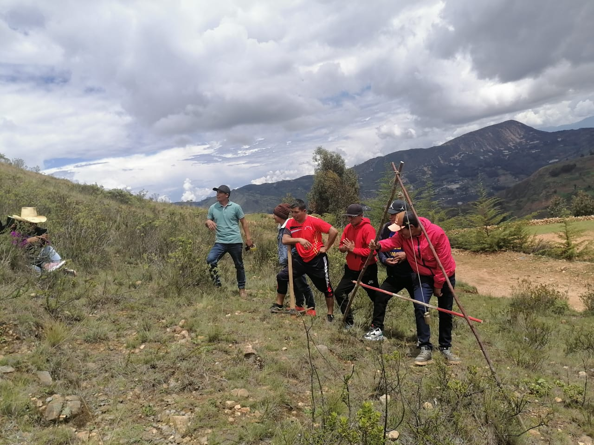
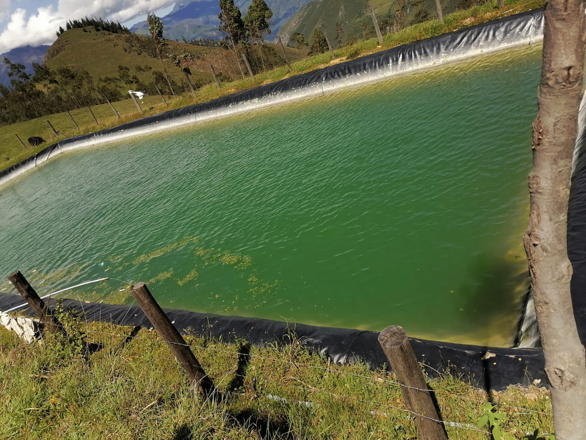
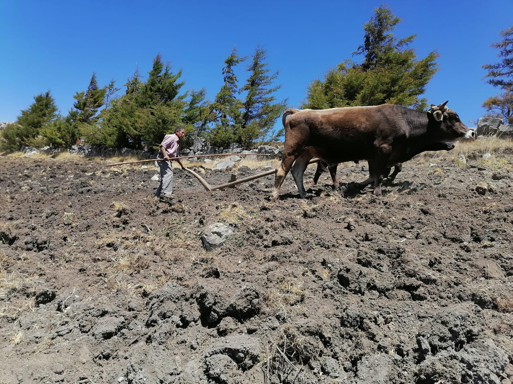

Historia de Cumbre Andina

Servicios Generales Cumbre Andina S.R.L. nació en octubre de 2012,
con una visión clara y un propósito firme: liderar el mercado con soluciones
sostenibles y ecoamigables para la agricultura.
Desde nuestros humildes comienzos,
nos hemos dedicado apasionadamente a ofrecer abono orgánico de calidad superior,
inspirados por el deseo de potenciar el crecimiento de los cultivos de manera natural
y respetuosa con el medio ambiente.
Trayectoria de Cumbre Andina
Somos líderes en el mercado, comprometidos con la excelencia y la sostenibilidad.
Desde nuestra fundación en octubre de 2012, nos hemos destacado por ofrecer abono
orgánico de calidad superior, impulsando el crecimiento de cultivos de manera natural
y respetuosa con el medio ambiente.
Además, hemos canalizado nuestra experiencia y conocimientos hacia la realización de
diversos proyectos de consultoría ambiental. Estos proyectos abarcan desde la evaluación
de impacto ambiental hasta la implementación de estrategias de gestión ambiental,
contribuyendo así al desarrollo de soluciones efectivas para los desafíos ambientales
contemporáneos


